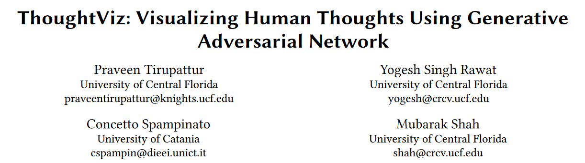

ThoughtViz: Visualizing Human Thoughts Using Generative Adversarial Network

1. 摘要
对人脑信号的研究一直受到科学界的高度关注。例如，在脑计算机接口（BCI）研究中，大脑信号与特定任务（如思考某事）相关的变化被检测出来并用于控制机器。从大脑信号中提取时空线索来对人的思维状态进行分类是一条已经探索过的道路，而对大脑状态进行解码和可视化则是新的和未来的研究方向。沿着后一个方向，我们在本文中提出了一种不仅能读心，还能解码和可视化人类思想的方法。更具体地说，我们通过脑电图（EEG）分析受试者在思考数字、字符或物体时的大脑活动，并以可视化的方式合成思维项目。为了实现这一目标，我们利用对抗学习的最新进展，设计了一个有条件的生成对抗网络（GAN），将编码的脑电信号作为输入，生成相应的图像。此外，由于收集大量脑电信号并非易事，我们的 GAN 模型允许使用有限的训练数据来学习分布。在三个不同的数据集（多个受试者思考数字、字符和物体的大脑信号）上进行的性能分析表明，我们的方法能够有效地根据人的想法生成图像。它们还表明，脑电信号明确编码了来自思维的线索，可有效用于生成语义相关的可视化图像。
2. 引言
一个难以实现的目标依然存在，那就是应用深度学习来理解和解释人类大脑的内部运作机制。早期研究中已经证明，大脑信号包含反映人类认知过程的信息线索，可以有效地用于各种应用。
我们在这项工作中做出了以下贡献：
- 我们介绍了人类思想的解释和可视化问题；
- 我们提出了一种新颖的条件 GAN 架构，该架构可根据特定的大脑活动生成特定类别的图像；
- 我们提出的 GAN 架构非常适合小型数据集，即使在有限的训练数据上进行训练，也能生成特定类别的图像。
3. 相关工作
我们在本文中介绍了不同的 CNN 和 LSTM 架构：
a) 对与人类思想相关的脑电图数据进行分类；
b) 使用它们对脑电图数据进行编码，以便为将高级类别转换为图像的下游生成方法提供条件。
传统的 GAN 架构允许我们使用噪声输入合成数据样本。条件 GAN 模型是一种特殊类型的 GAN 模型 [18]，在这种模型中，生成器被设定为生成来自特定类别的样本。通常情况下，通过向生成器提供单点向量或描述类别的特定特征以及噪声作为输入来实现条件化。条件 GAN 架构有不同的变体 [4, 7, 18, 21]。在这些模型中，鉴别器的任务通常是将生成器生成的样本归类为假样本。相反，我们提出了一种带有额外分类器的架构，旨在明确地对生成的样本进行分类，而不是使用鉴别器。我们通过实验证明，这将加快 GAN 模型的收敛速度。
此外，在训练数据有限的情况下，如涉及脑电图数据记录的认知研究，GAN 的训练具有挑战性。为了解决训练数据不足的问题，我们结合 [11] 中提出的想法扩展了 GAN 模型，将潜在生成空间重新参数化为混合模型，并在 GAN 训练的同时学习其参数。